WRITING & PHOTOGRAPHY
Media.
A collection of writing and photographs exploring the ideas, perspectives, and memories that shape how I see the world.
Writing.
I write to explore fields that I find interesting, whether they are reflections or broader ethical dilemmas in the world. I enjoy writing because it helps me organize my thinking and provides me with the knowledge needed to shape my understanding of the world.


My favourite quotes.
“If you love something, set it free. If it comes back, it is yours. If it doesn't, it never was.”
01 / 05
Photography.
I take photographs to document the moments that may be overlooked or forgotten otherwise. I feel that a memory is best preserved when you are able to physically look back on it.
01 / PHOTO SERIES
Neighbourhood on the Water
A photography series focused on highlighting early immigrants to Cambodia who were not allowed on the land, therefore having to settle down by building houses from bamboo on top of the ocean.


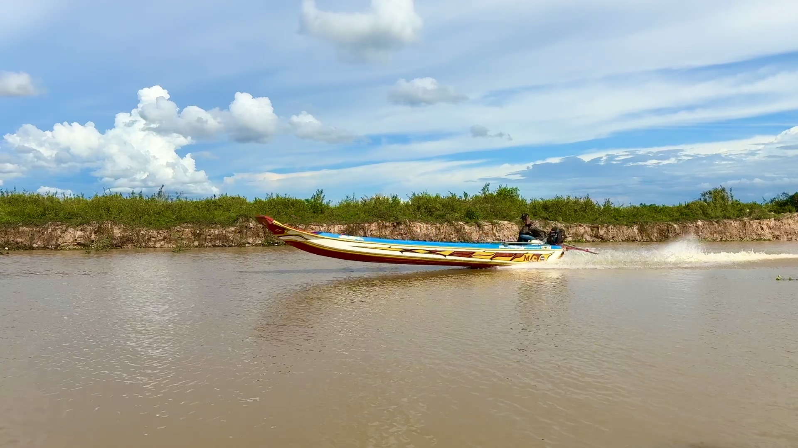
02 / PHOTO COLLECTION
Above the Ordinary
A photo collection of building edges that I have found interesting in different settings.
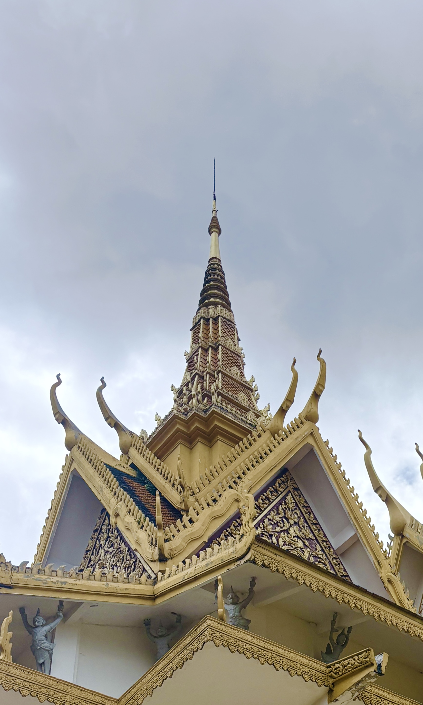
Royal Palace of Cambodia

Old City Hall
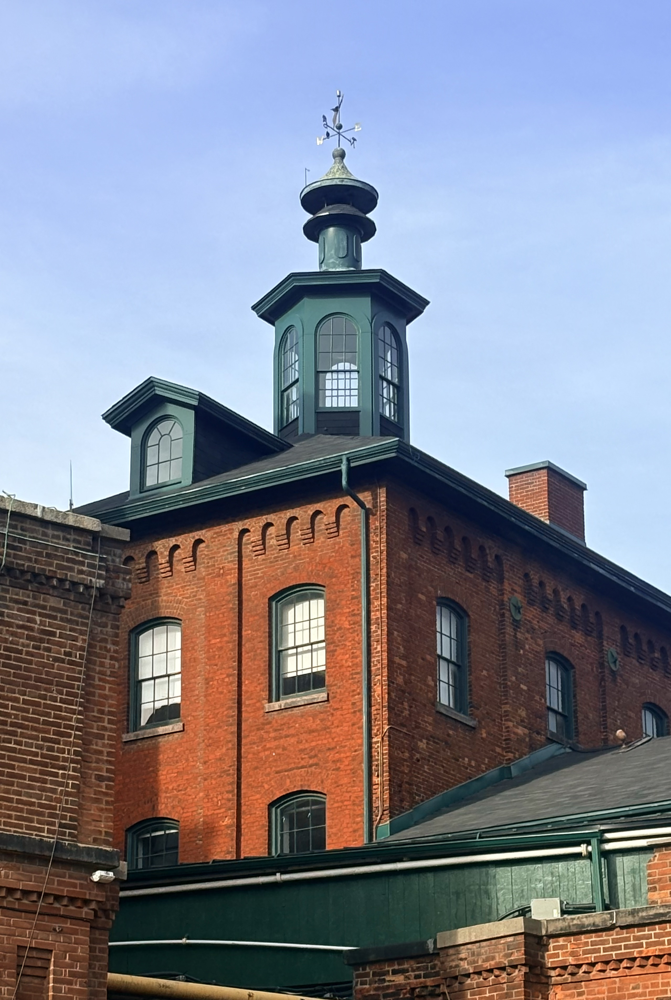
Distillery District
03 / PHOTO SERIES
Reflections
A photography series inspired by the song "Reflections" by The Neighbourhood. This series focuses on how the perception of things can change over time and how someone's habits can affect you long after they leave.
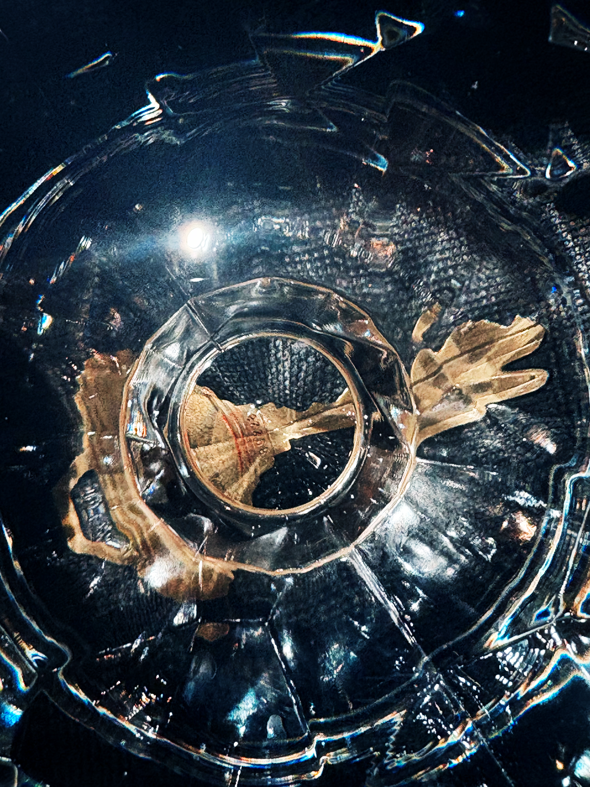
The Distorted Key

Searching Through The Clouds

Lasting Baggages

A Lasting Effect
04 / TRAVEL PHOTOGRAPHY COLLECTION
Chongqing
This collection of photos was all taken in Chongqing, China.

Taxi Series
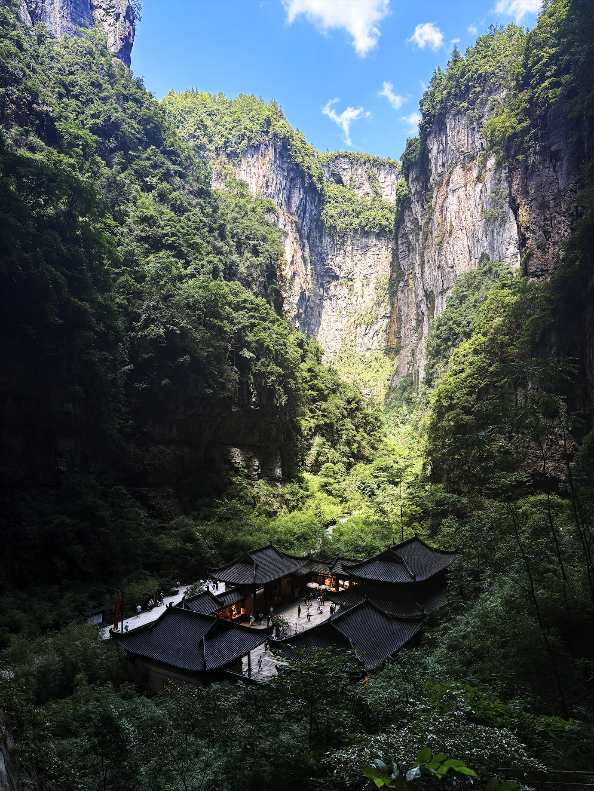
Paradise Away From the World
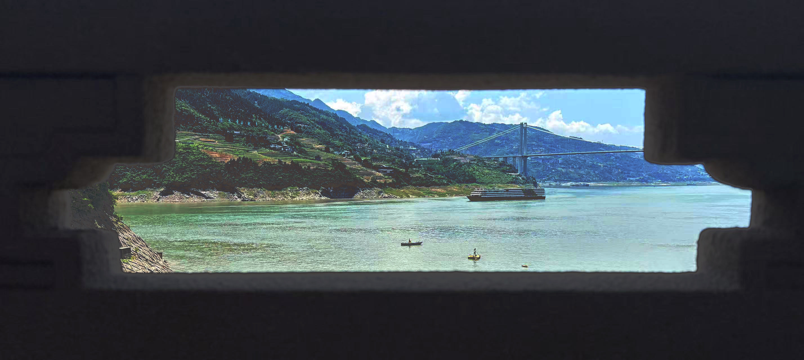
The Perfect Painting

Path of Life
Bridge of Memories
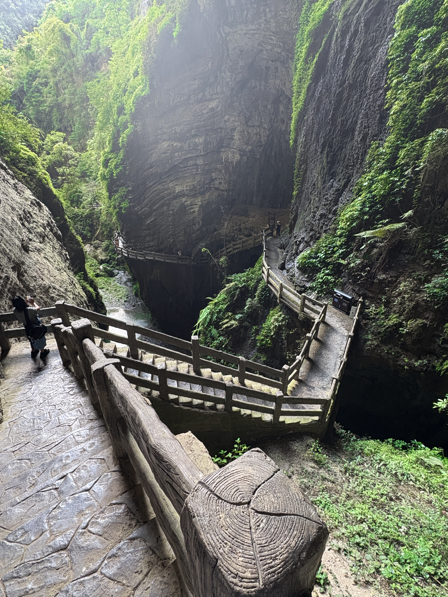
Staircase of the past
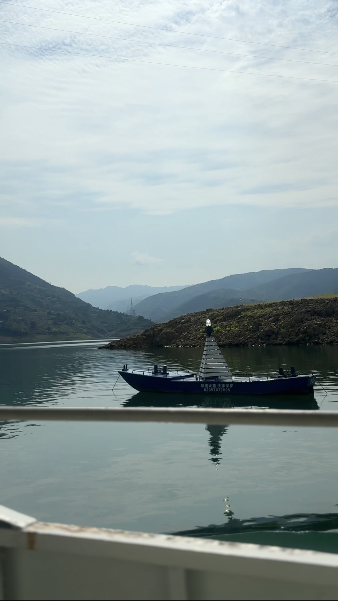
A Lonely Raft
05 / PHOTO COLLECTION
Other Perspectives
This photo collection includes other photos I found interesting.

Voyage in Toronto
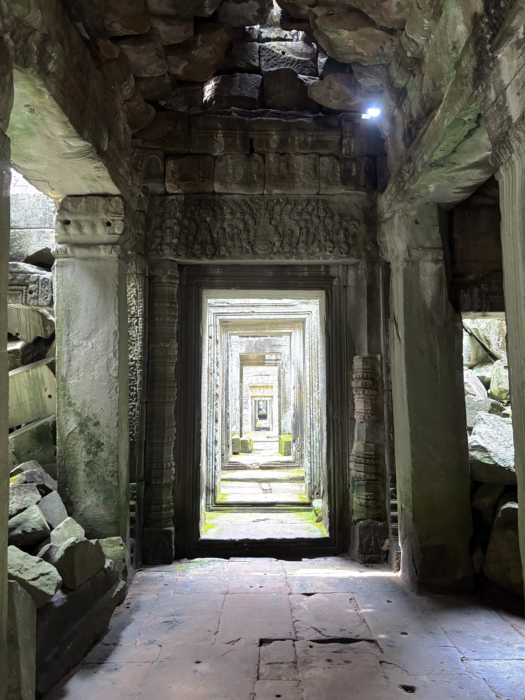
Portal of Time
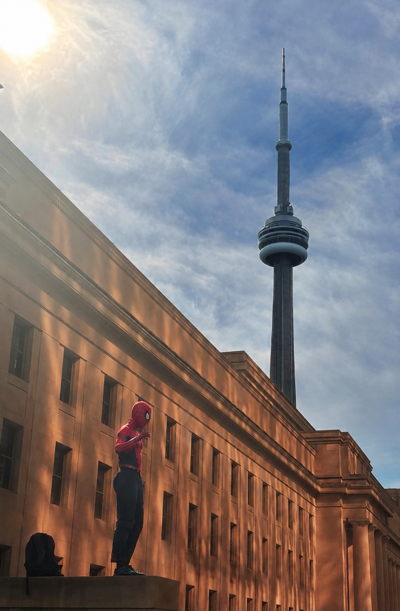
Superheros of the Ordinary
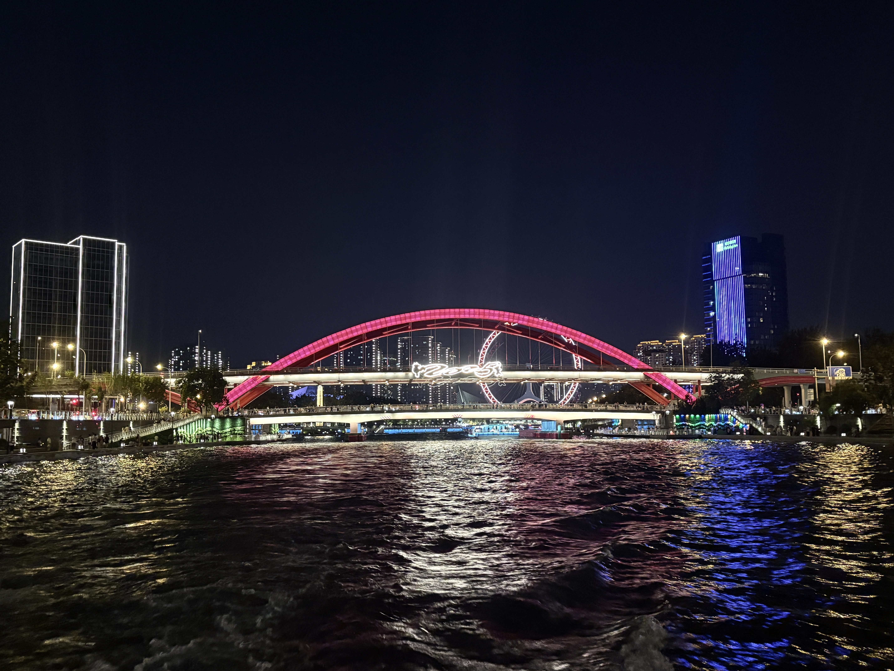
Nights in Tianjin

Travelling Through the Times
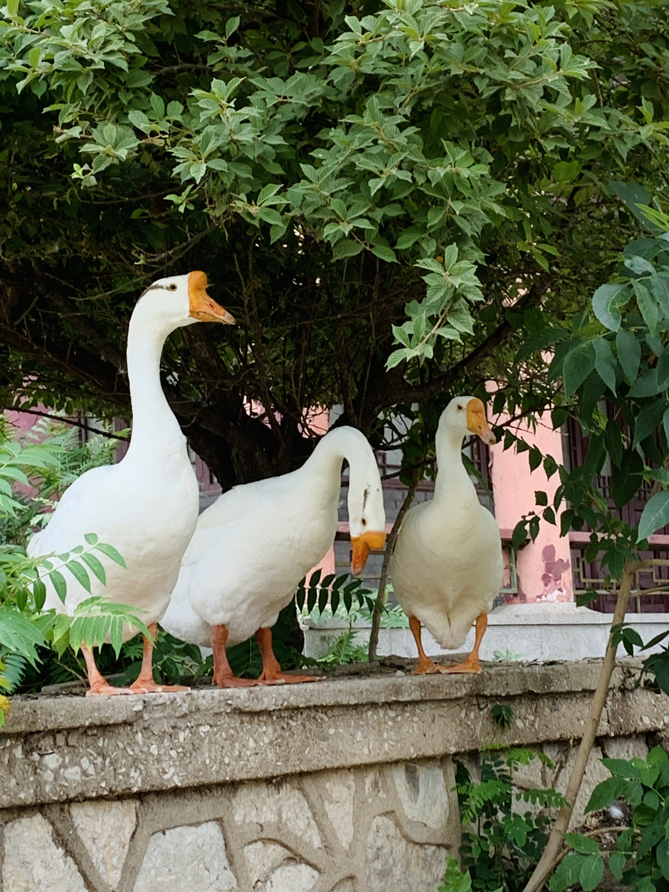
Geese Trio